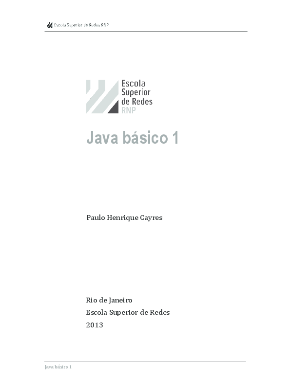
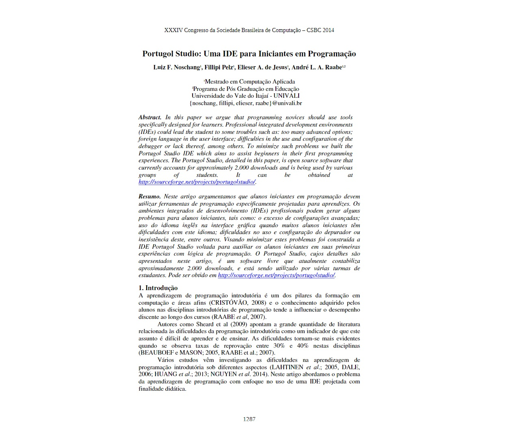
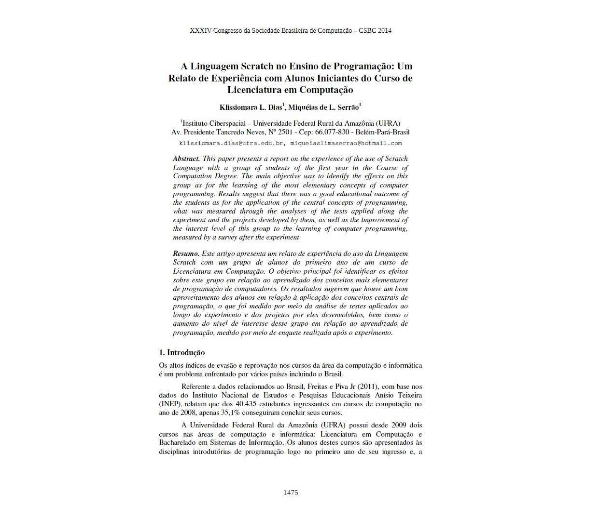

LIVROS
Java Básico 1
Livro Java Básico 1 (Paulo Henrique Cayres)
O livro Java básico 1, do autor Paulo Henrique Cayres, é um material que abrange toda a parte básica da linguagem de programação Java, trazendo conceitos elementares como algorítimos, histórico da linguagem , fundamentos de prgrmação em java, controle de fluco, Arrays, Classes e objetos.
Java Para Iniciantes 6ª edição (Herbert Schildt)
O objetivo deste livro é ensinar os fundamentos da programação Java. Ele usa uma abordagem passo a passo complementada por vários exemplos, testes e projetos, e não exige experiência prévia em programação. O livro começa com os aspectos básicos, como a compilação e execução de um programa java e, em seguida, disculte as palavras-chave, os recursos mais avançados de Java.

Livro Java Para Leigos (Barry Burd)
Escrito por uma das maiores referências da programação, Barry Burd, o Java Para Leigos, Tradução da 5ª Edição, traz informações atualizadas sobre linguagens de programação,
o básico da programação orientada a objetos, direcionamentos de como criar aplicativos utilizando o JDK7, reutilizar códigos e mais!
Este livro é dedicado para programadores inciantes e experientes e, até mesmo, pessoas curiosas que querem entender um pouco mais a respeito do tema.
Segue o padrão da Para Leigos, com linguagem de fácil acesso e explicações passo a passo para que programar se torne uma atividade fácil e divertida!
Livro Java do Zero, Uma Viagem ao Mundo Java (Daniel Abella)
Este livro Apresenta os principais pontos da Linguagem Java de maneira objetiva e clara, sem arrudeios!
Possuindo 8 capítulos
abordando temas como: Classes, Variáveis, Operadores, Estruturas de Fluxo/Controle, Orientação à Objetos, IDE Eclipse, Pacotes, Arrays,
Collections, Interfaces, Enum, Records, Exceptions, Sealed Classes e muito mais!
Uma abordagem hands-on, partindo da apresentação do conteúdo por texto e,
em dados momentos, referenciando artefatos externos, como vídeos e guias de referências rápidas.
ARTIGOS CIENTÍFICOS
O artigo 'Portugol Studio: Uma IDE para Iniciantes em Programação'
O artigo 'Portugol Studio: Uma IDE para Iniciantes em Programação' vem trazer informações importantes para os iniciantes em programação, pois, muitas vezes as pessoas pouco acostumadas com as tecnologias avançadas das IDEs, acabam desestimuladas a iniciarem por não conseguir configurar o ambiente de escritas de códigos. Por esse motivo, o artigo aborda uma ferramenta de fácil manuseio e com a linguagem Portugol, caracterizada por fascilitar o entendimento da lógica de programaçao.
A Linguagem Scratch no Ensino de Programação: Um Relato de Experiência com Alunos Iniciantes do Curso de Licenciatura em Computação
Visando investigar e testar alternativas para promoção de melhorias no processo de ensino-aprendizagem para iniciantes em programação de computadores, este trabalho apresenta parte dos resultados de um experimento realizado para avaliar os efeitos do uso do Scratch no ensino-aprendizagem de conceitos centrais de programação em um grupo de alunos calouros do curso de Licenciatura em Computação da UFRA
